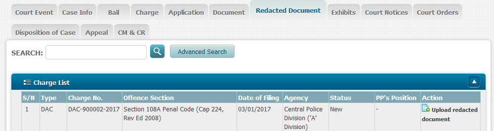
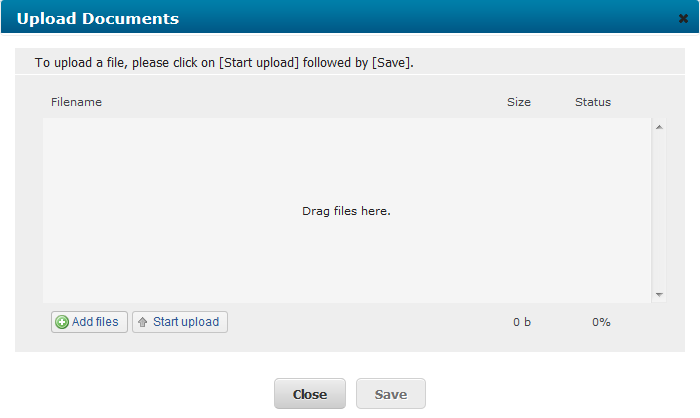
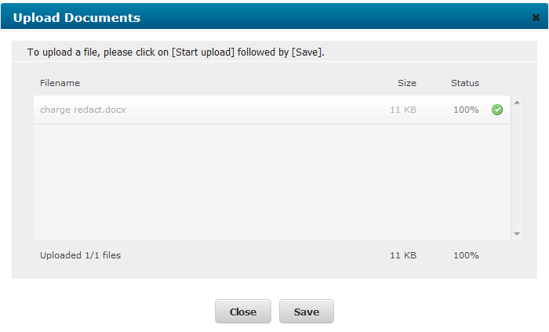
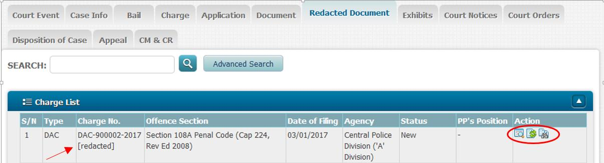

Appendices
Appendix A: Forms
- Form 1: [Deleted]
- Form 2: Sample Letter of Offer
- Form 3: Plaintiff's/Defendant's List of Issues in Dispute
- Form 4A
- Form 4B
- Form 4C
- Form 5: Order to Allow Entry and Search of Premises in the State Courts of The Republic of Singapore
- Form 6A: Injunction Prohibiting Disposal of Assets Worldwide
- Form 6B: Injunction Prohibiting Disposal of Assets in Singapore
- Form 7: Court Dispute Resolution (CDR)/Alternative Dispute Resolution(ADR) Form
- Form 7A: Request for CDR process
- Form 8: [Deleted]
- Form 9A: Liability Indication Form (NIMA and PIMA Claims)
- Form 9A(A): Liability Indication Form (Industrial Accident Claims)
- Form 9B: Quantum Indication Form
- Form 9C: Application for Directions under O 37 for Personal Injury/Non-Injury Motor Accident Claims
- Form 9C(A): Application for Directions under Order 37 of the Rules of Court for Magistrate's Court Cases Fixed for Simplified AD Pursuant to Order 108
- Form 9D
- Form 9E
- Form 9F
- Form 9G: Request for Fast Track ADCDR
- Form 9I: Recording Settlement / Entering Judgment by Consent (NIMA/PI/PIMA)
- Form 9J: Opening Statement for Plaintiff/Defendant (Mediation)
- Form 9J(A): Opening Statement for Plaintiff/Defendant (Conciliation)
- Form 9K: Opening Statement for Plaintiff/Defendant (Neutral Evaluation)
- Form 9L: Checklist for Pre-Assessment of Damages ADR Conferences
- Form 10: Notice of Objections to Contents of Affidavits of Evidence-in-Chief
- Form 11: Request for Early Expert Pre-Trial Conference
- Form 12: Note to Expert Witness
- Form 12A: Joint Expert Report
- Form 13: Index to Agreed Bundle of Documents
- Form 14: [Deleted]
- Form 15: [Deleted]
- Form 16
- Form 17
- Form 18: Bill of Costs for Contentious Business - Trials
- Form 19: Bill of Costs for Contentious Business Other Than Trials
- Form 20: Bill of Costs for Non-Contentious Business
- Form 21: Notice of Dispute on Bill of Costs
- Form 22: [Deleted]
- Form 23: [Deleted]
- Form 24: [Deleted]
- Form 25: [Deleted]
- Form 26: [Deleted]
- Form 27: [Deleted]
- Form 28: [Deleted]
- Form 29: [Deleted]
- Form 30: [Deleted]
- Form 31: [Deleted]
- Form 32: [Deleted]
- Form 33A: [Deleted]
- Form 33B: [Deleted]
- Form 34A: [Deleted]
- Form 34B: [Deleted]
- Form 35: [Deleted]
- Form 36: [Deleted]
- Form 37: [Deleted]
- Form 38: [Deleted]
- Form 39: [Deleted]
- Form 40: [Deleted]
- Form 41: [Deleted]
- Form 42: [Deleted]
- Form 43: [Deleted]
- Form 44: [Deleted]
- Form 45: [Deleted]
- Form 46: [Deleted]
- Form 47: [Deleted]
- Form 48: [Deleted]
- Form 49: [Deleted]
- Form 50: [Deleted]
- Form 51: [Deleted]
- Form 52: [Deleted]
- Form 53: [Deleted]
- Form 54: [Deleted]
- Form 55: [Deleted]
- Form 56: [Deleted]
- Form 57: [Deleted]
- Form 58: [Deleted]
- Form 59: [Deleted]
- Form 60: [Deleted]
- Form 61: [Deleted]
- Form 62: [Deleted]
- Form 63: [Deleted]
- Form 64: [Deleted]
- Form 65: [Deleted]
- Form 66: [Deleted]
- Form 67: [Deleted]
- Form 68: [Deleted]
- Form 69: [Deleted]
- Form 70: [Deleted]
- Form 71: [Deleted]
- Form 72: [Deleted]
- Form 73: [Deleted]
- Form 74: [Deleted]
- Form 75: [Deleted]
- Form 76: [Deleted]
- Form 77: [Deleted]
- Form 78: [Deleted]
- Form 79: [Deleted]
- Form 80: [Deleted]
- Form 81: [Deleted]
- Form 82: [Deleted]
- Form 83: [Deleted]
- Form 84: [Deleted]
- Form 85: [Deleted]
- Form 86: [Deleted]
- Form 87: [Deleted]
- Form 88: [Deleted]
- Form 89: [Deleted]
- Form 90: [Deleted]
- Form 91: [Deleted]
- Form 92: [Deleted]
- Form 93: [Deleted]
- Form 94: [Deleted]
- Form 95: [Deleted]
- Form 96: [Deleted]
- Form 97: [Deleted]
- Form 98: [Deleted]
- Form 99: [Deleted]
- Form 100: [Deleted]
Appendix B: Guidelines for Court Dispute Resolution for Non-Injury Motor Accident Claims and Personal Injury Claims
1. Introduction
1.1 The State Courts’ Court Dispute Resolution Cluster (CDRC) provides Court Dispute Resolution (CDR) services for all civil matters. Two main processes – mediation and neutral evaluation – are used.
1.2 According to Practice Directions 37 and 38, all non-injury motor accident claims and personal injury claims are to proceed for CDR within 8 weeks after the Memorandum of Appearance has been filed.
1.3 Neutral evaluation will be used in the CDR sessions for these cases. This Appendix sets out the guidelines to be followed by solicitors.
2. Application
2.1 The guidelines in this Appendix shall apply to all writs for non-injury motor accident and personal injury claims that are filed in Court on or after 1st April 2016 and to all motor accident cases (whether or not involving any claim for personal injuries) and actions for personal injuries arising out of an industrial accident that are commenced in the High Court on or after 1st December 2016 and transferred to the District Court.
3. Date of CDR
3.1 As stated in Practice Directions 37(2) and 38(2), solicitors in these cases will receive a notice from the Court fixing the first CDR session.
3.2 A request for an adjournment of a CDR session shall be made only by filing a “Request for Refixing/Vacation of Hearing Dates” via the Electronic Filing Service.
3.3 The applicant must obtain the consent of the other parties to the adjournment, and list the dates that are unsuitable for all the parties.
3.4 The request must be made not less than 2 working days before the date of the CDR.
3.5 An adjournment of a CDR session will be granted only for good reason e.g. the solicitor is engaged in a trial or other hearing in the High Court or the State Courts, is away on in-camp training, is overseas, or on medical leave; or the party or his witness, if asked to attend, is out of the country or otherwise unavailable for good reason.
3.6 A CDR session from which one or all parties are absent without good reason will be counted as one CDR session.
4. Attendance at CDR
4.1 Only solicitors are required to attend CDR sessions. Their clients need not be present unless the Judge directs their attendance.
4.2 In certain cases, the Judge may direct the parties to attend subsequent CDR sessions. For instance, the drivers of the vehicles involved in a motor accident and eyewitnesses may be asked to be present at a later CDR session for the purpose of a more accurate neutral evaluation or to facilitate in negotiating a settlement.
5. Preparation for CDR
5.1 In all non-injury motor accident and personal injury claims, solicitors should exchange before the first CDR session, a list of all the relevant documents relating to both liability and quantum.
5.2 In addition, solicitors should exchange the following documents before the first CDR session:
5.2.1 For CDRs for motor accident claims -
(a) Full and complete Singapore Accident Statements and police reports including the names, identity card numbers and addresses of all persons involved in the accident, together with type-written transcripts of their factual accounts of the accident;
(b) Police sketch plan and if unavailable, the parties’ sketches of the accident;
(c) Results of police investigations or outcome of prosecution for traffic offence(s);
(d) Police vehicle damage reports;
(e) Original, coloured copies or scanned photographs of damage to all vehicles;
(f) Original, coloured copies or scanned photographs of the accident scene;
(g) Video recording of the accident (if any);
(h) Accident reconstruction report (if any);
(i) Names and addresses of witnesses (if any);
(j) Repairer’s bill and evidence of payment;
(k) Surveyor’s report;
(l) Excess bill or receipt;
(m) Vehicle registration card;
(n) COE/PARF certificates;
(o) Rental agreement, invoice and receipt for rental of replacement vehicle (if any);
(p) Correspondences with the defendant’s insurer relating to pre-repair survey and/or post-repair inspection of the plaintiff’s vehicle;
(q) Any other supporting documents.
5.2.2 For CDRs for personal injury claims or where personal injury forms part of the motor accident claim -
(a) Medical reports from the treating doctor, reviewing doctor and medical specialist;
(b) Certificates for hospitalisation and medical leave;
(c) Bills for medical treatment and evidence of payment;
(d) Income tax notices of assessment and/or other evidence of income and loss thereof;
(e) Supporting documents for all other expenses claimed (if any).
5.2.3 For CDRs for industrial accidents -
(a) The parties’ sketches of the accident;
(b) Notice of accident lodged with the Ministry of Manpower;
(c) Ministry of Manpower’s investigation reports (if any);
(d) Notice of Assessment from the Occupational Safety and Health Division, Ministry of Manpower (if any);
(e) Outcome of prosecution (if any);
(f) Original, coloured copies or scanned photographs of the accident scene;
(g) Video recording of the accident (if any);
(h) Names and addresses of witnesses (if any);
(i) Any other supporting documents.
5.2.4 For CDRs for any personal injury claim not involving motor accidents or industrial accidents -
(a) The parties’ sketches of the accident;
(b) Original, coloured copies or scanned photographs of the accident scene;
(c) Video recording of the accident (if any);
(d) Names and addresses of witnesses (if any);
(e) Any other supporting documents.
5.3 Documents and instructions
5.3.1 Solicitors shall endeavour to obtain from their clients all documents in good time for exchange between the parties before the first CDR session. They should also check that all documents needed for consideration of the claim are ready. If any additional documents apart from those referred to in paragraph 5.2 are required, this shall be made known to the other party well before the CDR date. If a re-inspection of the other party’s vehicle is required, it shall be conducted and the report exchanged before the first CDR session.
5.3.2 It is very important that solicitors take full and complete instructions from their respective clients before attending the CDR session. Before the CDR session, solicitors should evaluate with their clients the documents and reports and advise their clients on all the relevant aspects of their case.
5.3.3 Where a party is relying on the factual account of any witness in support of his case, a signed statement or Affidavit of Evidence-in-Chief should be procured from that witness and submitted to the Court at the first CDR session to enable the Court to be fully apprised of all the relevant evidence.
5.3.4 Insurers should notify their solicitors if, to their knowledge, other claims arising from the same accident have been filed in Court. Solicitors should assist the Court in identifying these related claims so that all the claims may be dealt with together at CDR sessions for a consistent outcome on liability. If an indication on liability has been given or interlocutory judgment has been entered in any related claim(s), solicitors should notify the Court accordingly and endeavour to resolve the remaining claims(s) on the same basis.
5.3.5 Third party proceedings, if any, should be commenced before the first CDR session.
5.4 To make the full use of CDR sessions, it is essential that solicitors be well prepared and familiar with their cases. This also applies to duty solicitors assigned by their firms to deal with the firm’s cases on a particular day. Duty solicitors must receive their files in good time and with clear instructions from the solicitor in charge so that they can familiarise themselves with the cases, understand the basis of instructions (i.e. why a certain position is taken) and to act on them (e.g. to convey the clients’ offer on quantum or liability to the opposing solicitor). Duty solicitors must, after the CDR session, ensure that they convey to the solicitor in charge, the rationale for the Judge’s indication, the discussion at CDR sessions, and the follow-up action to be taken before the date of the next CDR session.
6. CDR Session
Claims subject to the simplified process under Order 108 of the Rules of Court
6.1 All cases commenced by writ on or after 1st November 2014 in a Magistrate’s Court and any case commenced by writ on or after 1st November 2014 in a District Court (where parties have filed their consent in Form 233 of Appendix A of the Rules of Court for Order 108 to apply) will be subject to the simplified process under Order 108 of the Rules of Court (Cap. 322, R 5).
6.2 The requirement for upfront discovery under Order 108 Rule 2(4) of the Rules of Court (Cap. 322, R 5) and Practice Direction 19 (Upfront discovery) apply to such cases.
6.3 These claims will continue to be called for CDR within 8 weeks after the filing of the memorandum of appearance. There will be no case management conference convened. The rest of the guidelines in Appendix B also apply to CDRs for these claims.
6.4 Where parties are unable to resolve the case through CDR, the Court will manage the case, having regard to the provisions in Order 108 Rule 5 of the Rules of Court, by, inter alia, —
(a) giving such directions as the Court thinks fit in order to ensure that the case progresses expeditiously (including directions for the list of witnesses to be called for trial, the appointment of a single joint expert where appropriate, the exchange and filing of Affidavits of Evidence-in-Chief and setting the matter down for trial);
(b) fixing timelines to manage and control the progress of the case; and
(c) taking such other action or making such other direction as the Court thinks appropriate in the circumstances including costs sanctions or unless orders.
6.5 Where any question requiring the evidence of an expert witness arises and parties are unable to agree on the expert to be appointed, the Court may, having regard to the provisions in Order 108, Rule 5(3) of the Rules of Court, appoint the expert for the parties at a CDR session. Each party is expected to furnish the following for the determination of the single joint expert:
(a) names and curriculum vitae of two experts the party considers suitable to appoint (for which purpose a party may nominate the expert who has conducted an inspection, survey or review for him or provided him with medical treatment);
(b) the fees charged by each nominated expert for preparing the report and attendance in Court;
(c) the estimated time needed to prepare the report; and
(d) whether the parties have complied with the pre-action protocol.
The Court will appoint the single joint expert after hearing submissions on the suitability or unsuitability of the nominated experts to be appointed.
Indications on liability and quantum
6.6 For NIMA and PIMA cases, the Court will provide an indication on liability
if —
(a) the factual matrix of the particular motor accident does not correspond substantially with any of the scenarios set out in the Motor Accident Guide (1st Edn., 2014 State Courts, Singapore) (“Motor Accident Guide”) ; or
(b) despite the parties’ reasonable efforts in resolving the question of liability through negotiation with reference to the Motor Accident Guide before the CDR session, no settlement has been reached.
6.7 Solicitors for all the parties seeking an indication on liability in NIMA and PIMA cases must submit a duly completed “Liability Indication Form (NIMA and PIMA Claims)” (see Form 9A) to the Court at the first CDR session. Except in cases where no corresponding scenario is provided for in the Motor Accident Guide, solicitors must specify in the Liability Indication Form the scenario(s) in the Motor Accident Guide that is/are relevant to the parties’ factual accounts of the accident and state their respective proposals on liability.
6.8 Solicitors for all parties seeking an indication on liability in industrial accident cases must submit a duly completed “Liability Indication Form (Industrial Accident Claims)” (see Form 9A(A)) to the Court at the first CDR session.
6.9 In CDR sessions for all personal injury claims, except PIMA claims, the Court will provide an indication on both liability and quantum of the claim. Solicitors for all the parties shall submit a duly completed “Quantum Indication Form” (see Form 9B) to the Court at the first CDR session.
6.10 In respect of PIMA cases, whether or not an indication on liability is given, the Court may, at its own discretion in appropriate cases or at solicitors’ request, provide an indication on quantum. Solicitors requesting for an indication on quantum must obtain each other’s consent before the CDR session, and submit the duly completed Quantum Indication Form (i.e. Form 9B) to the Court.
7. Help and Co-operation of Insurers in facilitating CDR
7.1 Insurers play a key role in the success of CDR. CDR sessions are intended for substantive discussion of the issues. A CDR is unproductive if:
7.1.1 parties have not —
(a) exchanged the relevant documents listed in paragraph 5; or
(b) identified the scenario(s) in the Motor Accident Guide that is/are relevant to their respective factual accounts of the accident
well before the CDR session to facilitate assessment and discussion of options;
7.1.2 one or more of the solicitors for the parties have not received or are still taking client’s instructions; or
7.1.3 parties are still negotiating or are awaiting instructions upon a counter-offer.
8. Follow up action after CDR
8.1 Solicitors must inform their clients of the outcome of a CDR session and render their advice quickly on the liability and/or quantum indications given by the Court. To facilitate settlement, solicitors should obtain their clients’ instructions and make the necessary proposals or offers of settlement early to enable the other party to consider their position or proposal and respond before the next CDR date. Reasons shall be given for the position taken on liability and/or quantum so that the solicitors can inform the Court of the basis for their clients’ mandate at the next CDR session.
8.2 Rather than refraining from taking a position on liability or insisting that agreement on liability is contingent on quantum being settled at a particular sum (as is sometimes the case), parties who are able to agree on the issue of liability but not quantum shall consider allowing an Interlocutory Judgment to be recorded for liability and proceed for assessment of damages. A hearing to assess damages is far less costly than a full trial.
Form 9A(A) - Liability Indication Form (Industrial Accident Claims)
Form 9A(A): Liability Indication Form (Industrial Accident Claims)
Appendix C: Pre-action Protocol for Non-Injury Motor Accident Cases
1. Application
1.1 The object of this protocol is to prescribe reasonable conduct for non-injury motor accident claims. It prescribes a framework for pre-writ negotiation and exchange of information. In exercising its discretion and powers, the court will have regard to compliance with this protocol or lack thereof; see, for example, Order 25, Rules 1, 1A and 8, Order 34A, Rule 1, Order 59, Rule 5, and Order 59 Appendix 2, of the Rules of Court (Cap. 322, R 5).
1.2 This protocol applies to actions arising out of non-injury motor accidents occurring on or after —
(a) 1st April 2016 that are to be lodged with the Financial Industry Disputes Resolution Centre Ltd (“FIDReC”) or to be filed in in the Magistrate’s Court or the District Court, as the case may be; and
(b) 1st December 2016 that are to be filed in the High Court (and subsequently transferred to the District Court).
This protocol governs pre-action conduct and sets out best practices in respect of such claims.
1.3 Any reference to “the potential defendant” in this protocol refers to the potential defendant if he is not claiming under his insurance policy, or to his insurer if he is claiming under his policy.
1.4 Any reference to an “insurer” in this protocol refers to an insurer that is known or could be reasonably known to the claimant.
1.5 This protocol does not affect any privilege that may apply to any communication between the parties that is undertaken in compliance with it.
1.6 The Court will not impose sanctions where there are good reasons for non-compliance with the provisions of this protocol.
2. Notice of Accident and Pre-repair Survey
2.1 Time is of the essence in the joint selection of a motor surveyor and the conduct of a pre-repair survey of the claimant’s vehicle.
2.2 Within 3 working days of the date of the accident, the claimant must send a notice of accident (Form 1 in this protocol) to the potential defendant and his insurer (or where there is a multi-party collision, to each of the potential defendants and his insurer). This is to facilitate a joint survey of the damage to the claimant’s vehicle prior to the commencement of repairs (“pre-repair survey”). The pre-repair survey will include a survey of the vehicle when its damaged parts are being dismantled prior to the commencement of repairs.
2.3 Within 2 working days of receipt of the notice of accident, the insurer must reply to the claimant (Form 2 in this protocol) and if he intends to conduct a pre-repair survey of the claimant’s damaged vehicle, he must include in his reply a list of at least 10 motor surveyors.
2.4 Within 2 working days of receipt of the insurer’s reply, the claimant must reply to the insurer stating whether he agrees or has any objections to the appointment of any of the motor surveyors proposed by the insurer. The claimant may specifically select one or more of the proposed motor surveyors. If the claimant fails to reply or fails in his reply to object to any of the motor surveyors listed by the insurer within the time stipulated by this paragraph, the claimant is deemed to have agreed to the appointment of any of the motor surveyors listed by the insurer.
2.5 The motor surveyor mutually agreed upon by the parties or presumed to be agreed by the claimant shall be referred to as the “single joint expert”. Upon reaching such agreement or upon the expiry of the time stipulated for the claimant to object to the motor surveyors proposed by the insurer and the claimant fails to do so (as the case may be), the insurer must immediately instruct the single joint expert to conduct the pre-repair survey. The single joint expert must complete the pre-repair survey within 2 working days of his appointment.
2.6 If the claimant objects to all the motor surveyors proposed by the insurer, he must include in his reply a list of at least 10 motor surveyors whom he considers as suitable to appoint.
2.7 Within 2 working days of receipt of the claimant’s list of proposed motor surveyors, the insurer must state whether he agrees or has any objections to any of the motor surveyors proposed by the claimant. The insurer may specifically select one or more of the proposed motor surveyors. If the insurer fails to reply or fails in his reply to object to any of the motor surveyors listed by the claimant within the time stipulated by this paragraph, the insurer is deemed to have agreed to the appointment of any of the motor surveyors listed by the claimant.
2.8 The motor surveyor mutually agreed upon by both parties or presumed to be agreed by the insurer shall be referred to as the “single joint expert”. Upon reaching such agreement, the insurer must immediately instruct the single joint expert to conduct the pre-repair survey. Alternatively, upon the expiry of the time stipulated for the insurer to object to the motor surveyors proposed by the claimant and the insurer fails to do so, the claimant must immediately instruct the single joint expert to conduct the pre-repair survey. The single joint expert instructed by the insurer or the claimant (as the case may be) must complete the pre-repair survey within 2 working days of his appointment.
2.9 If the insurer objects to all the motor surveyors proposed by the claimant, both parties are not precluded from instructing a motor surveyor of their own choice to conduct the pre-repair survey. In such event, the motor surveyor appointed by the insurer must complete the pre-repair survey for the insurer within 2 working days from the date of the insurer’s reply objecting to all the motor surveyors proposed by the claimant. If the quantum of the potential claim is likely to be within the Magistrate’s Court limit, parties are to be aware of Order 108, Rule 5(3) of the Rules of Court on the appointment of a single joint expert should the matter be unresolved subsequently and proceed for a simplified trial. Both parties shall in any event not unreasonably withhold consent to the appointment of a single joint expert as far as possible.
2.10 Once the pre-repair survey has been conducted, the claimant and the insurer shall negotiate and, as far as possible, come to an agreement on the cost of repairing the claimant’s vehicle.
2.11 If parties are unable to come to an agreement on the cost of repairing the vehicle after negotiations, the claimant may proceed to repair his vehicle. The insurer may wish to request for an opportunity to conduct a post repair inspection once the vehicle has been repaired. The request should be made as soon as possible and before the repaired vehicle is returned to the claimant.
3. Letter of Claim
3.1 The claimant must send a letter of claim (Form 3 in this protocol) to every potential defendant and his insurer. The letter of claim must set out the full particulars of his claim and enclose a list of all the relevant documents relating to both liability and quantum. The claimant must also include in his letter of claim a copy each of all relevant supporting documents, where available, such as:
(a) full and complete Singapore Accident Statements together with type-written transcripts of all persons involved in the accident, including a sketch plan;
(b) repairer’s bill and evidence of payment;
(c) motor surveyor’s report;
(d) excess bill/receipt;
(e) vehicle registration card;
(f) COE/PARF certificates;
(g) names of all witnesses (where possible to disclose);
(h) original, coloured copies or scanned photographs of damage to all vehicles;
(i) original, coloured copies or scanned photographs of the accident scene;
(j) video recording of the accident (if any);
(k) accident reconstruction report (if any);
(l) rental agreement, invoice and receipt for rental of replacement vehicle (if any);
(m) correspondences with the potential defendant’s insurer relating to pre-repair survey and/or post repair inspection of the claimant’s vehicle;
(n) any other supporting documents.
3.2 The claimant must also state in his letter of claim whether he had notified the insurer of the accident by sending the notice of accident. If a pre-repair survey was conducted and the claim for cost of repairs is made pursuant to the amount negotiated and agreed upon by the parties, this should be stated in the letter of claim.
3.3 If, to the claimant’s knowledge, the insurer had waived the requirement for pre-repair survey and/or post-repair inspection of the vehicle, he should state so accordingly in the letter of claim.
3.4 The letter of claim must also instruct the potential defendant to immediately pass the letter and documents to his insurer if he wishes to claim under his insurance policy. The letters to any other potential defendants must be copied to the rest of the parties. The letter(s) to the potential defendant(s) must be sent by e-mail, fax or certificate of posting. The letters to insurers must be sent by e-mail, fax, A.R. Registered mail or by hand (in which case an acknowledgement of receipt should be obtained).
4. Potential Defendant’s response
4.1 If the insurer wishes to conduct a post-repair inspection of the claimant’s vehicle not conducted previously, he must make the request to the claimant within 7 days of receipt of the letter of claim. The insurer must state in the letter of request why a post-repair inspection is now sought, especially if the opportunity for pre-repair survey and/or post-repair inspection had earlier been waived.
4.2 The claimant must reply within 7 days of receipt of the letter of request. Where valid reasons are given by the insurer, the parties shall as far as possible, agree on the arrangements for the post-repair inspection so as to facilitate an amicable resolution of the claim as soon as possible.
4.3 The potential defendant must send an acknowledgement letter (Form 4 or Form 4A in this protocol) to the claimant within 14 days of receipt of the letter of claim. If he is ready to take a position on the claim, he must state his position. If not, he must first send an acknowledgement.
4.4 If the claimant does not receive an acknowledgement letter within the requisite 14 days, the claimant may commence proceedings without any sanction by the Court.
4.5 If the potential defendant replies to the claimant with only an acknowledgement, within 8 weeks from the date of receipt of the letter of claim or within 14 days after inspecting the vehicle, whichever is later, the potential defendant must reply to the claimant substantively, stating the potential defendant’s position on the claim as to both liability and quantum, for example whether the claim is admitted or denied or making an offer of settlement (Form 4 or Form 4A in this protocol).
4.6 If the claim is not admitted in full, the potential defendant must:
(a) give reasons and provide the claimant with a list setting out all the relevant documents;
(b) include in his reply a copy of each of all relevant supporting documents;
(c) confirm/state the identity of the person driving his vehicle at the time of the accident and provide the driver’s identification number and address if this is not already stated in the Singapore Accident Statement;
(d) enclose full and complete Singapore Accident Statements showing the names, identification numbers and addresses of all other persons involved in the accident and typewritten transcripts of their factual accounts of the accident;
(e) enclose any pre-repair and/or post-repair survey/inspection report(s); and
(f) specify the particular scenario in the Motor Accident Guide that is applicable to his account of the accident, enclose with his reply a copy of the relevant page of the Motor Accident Guide, and, except where the claim is denied, make an offer on liability (Form 4A in this protocol).
4.7 If the insurer is the party replying to the claimant, the reply shall also state the name(s), telephone number(s) and fax number(s) of the insurance officer(s) handling the matter and the insurer’s file reference number(s), to facilitate correspondence.
4.8 If the potential defendant has a counterclaim, he must include it in his reply giving full particulars of the counterclaim together with all relevant supporting documents. If the potential defendant is pursuing his counterclaim separately, i.e. his insurer is only handling his defence but not his counterclaim, the potential defendant must send a letter to the claimant giving full particulars of the counterclaim together with all relevant supporting documents within 8 weeks from receipt of the letter of claim. If the potential defendant has already furnished particulars in a separate letter of claim, he need only refer to that letter of claim in his reply.
4.9 If the claimant does not receive the potential defendant’s substantive reply to his letter of claim within the requisite timeframe stipulated in paragraph 4.5, he may commence proceedings without any sanction by the Court.
4.10 The letter of claim and the responses are not intended to have the effect of pleadings in an action.
5. Third parties
5.1 Where a potential defendant wishes to bring in a third party, he must inform the claimant and the other potential defendants by letter within 14 days of receipt of the claimant’s letter of claim. The potential defendant shall send to the third party and his insurer a letter each setting out full particulars of his claim against the third party together with a copy each of the claimant’s letter of claim and all relevant supporting documents within the same period. The potential defendant’s letter to the third party must also instruct the third party to immediately pass the letter and the documents to his insurer if he wishes to claim under his insurance policy. This letter must be copied to the claimant.
5.2 The protocol set out in paragraphs 2, 3 and 4 is applicable to the third party or, if he is claiming under his insurance policy, his insurer, as though the potential defendant were the claimant, and the third party or his insurer as the case may be, were the potential defendant.
6. Fourth parties
6.1 Paragraph 5 shall apply with the necessary modifications to fourth party proceedings and so on. All correspondences between the parties must be copied to all the other parties involved in the accident.
7. Potential defendant to bear claimant’s loss of use arising from pre-repair survey and/or post-repair inspection
7.1 The potential defendant must compensate the claimant for the loss of use of his vehicle computed from the date of receipt of the claimant’s notice of accident until the date the claimant is notified in writing that —
(a) the pre-repair survey is completed and he may proceed to repair his vehicle; or
(b) the insurer is waiving the requirement for pre-repair survey and he may proceed to repair his vehicle,
as the case may be, inclusive of any intervening Saturday, Sunday or public holiday.
7.2 Where the insurer fails to respond to the claimant within 2 working days of receipt of the notice of accident as to whether he wishes to carry out or waive a pre-repair survey, the claimant may proceed to repair the vehicle and the potential defendant must compensate the claimant for the loss of use of his vehicle computed over 2 working days, inclusive of any intervening Saturday, Sunday or public holiday.
7.3 For avoidance of doubt, the compensation payable to the claimant for loss of use in the instances set out in paragraphs 7.1 and 7.2 is additional to any other claim for loss of use which the claimant may bring against the potential defendant.
7.4 Where an insurer requests for post-repair inspection pursuant to paragraph 4.1, the potential defendant must compensate the claimant for the loss of use of his vehicle for the day that the inspection is conducted.
8. Negotiation
8.1 Where the claimant’s position on liability differs from the potential defendant’s, the claimant must within 2 weeks from the date of receipt of the potential defendant’s reply to the letter of claim, make a counter-offer on liability. The claimant must specify the particular scenario in the Motor Accident Guide that is applicable to his account of the accident and enclose a copy of the relevant page of the Motor Accident Guide (Form 4A in this protocol may be used with the necessary modifications).
8.2 After all the relevant information and documents have been exchanged (including any pre-repair and post-repair survey/inspection report(s)), the parties shall negotiate with a view to settling the matter at the earliest opportunity on both liability and quantum. Litigation should not be commenced prematurely if there are reasonable prospects for a settlement.
8.3 If, after reasonable effort has been made to settle the matter, but there are no reasonable prospects of settlement after a time period of at least 8 weeks from the date of receipt of the letter of claim, save where paragraph 4.4 or 4.9 of this protocol applies, the claimant must give 10 clear days’ notice (Form 5 in this protocol), by e-mail, fax or certificate of posting to the potential defendant of his intention to proceed with a writ. He must also inform the potential defendant of the names of all the parties he is suing.
9. Pre-action costs
9.1 Where parties have settled both liability and quantum before any action is commenced, a claimant who has sought legal representation to put forward his claim will have incurred legal costs. A guide to the costs to be paid is as follows:
| Sum settled (excluding interest if any) | Costs allowed (exclusive of disbursements) |
|---|---|
| Less than $1,000 | $300 |
| $1,000 to $9,999 | $300 to $700 |
| $10,000 and above | $500 to $1,000 |
10. Costs sanctions in relation to pre-repair survey and post repair inspection
10.1 Where the claimant has without good reason repaired or caused repairs to be carried out to his vehicle without first complying with paragraph 2 of this protocol in relation to pre-repair survey, then on account of the omission, the court may impose costs sanctions against the claimant.
10.2 Where the defendant disputes the damage to the claimant’s vehicle and after the commencement of Court proceedings requests for an inspection of the claimant’s vehicle without good reason, the Court may impose costs sanctions against the defendant.
11. Early agreement on liability
11.1 Where parties have agreed on the issue of liability prior to the commencement of proceedings and wish to issue a writ in order for damages to be assessed, the plaintiff must file a writ endorsed with a simplified statement of claim (Form 6 in this protocol). If no appearance is entered after the writ is served, the plaintiff may, in the manner prescribed under the Rules of Court, proceed to enter default interlocutory judgment and take out a summons for directions for the assessment of damages. If an appearance is entered, the plaintiff may take out a summons for interlocutory judgment to be entered and for directions for the assessment of damages.
12. Lodgement of claims below $3,000 with FIDReC
12.1 This paragraph applies to non-injury motor accident claims where the damages claimed before apportionment of liability is below $3,000 excluding survey fees, interests, costs and disbursements.
12.2 Unless the case falls within one or more of the exceptions listed in paragraph 13 of this protocol, the claimant shall in every case referred to in paragraph 12.1, lodge his claim with FIDReC at first instance. Upon lodgement, the claim shall be dealt with by FIDReC in accordance with its Terms of Reference relating to the management and resolution of such claims.
12.3 Notwithstanding that the claim is to be lodged with FIDReC, the claimant and potential defendant shall comply with the requirements of this protocol. In this connection, references to the “Court”, writ/Court action and proceedings in this protocol shall refer to “FIDReC”, the lodgement of a claim at FIDReC and proceedings at FIDReC respectively.
13. Exceptions to FIDReC proceedings
13.1 In any case where –
(a) the claimant is a body corporate or partnership;
(b) one or more of the vehicles involved in the accident is a government, a foreign-registered or diplomatic vehicle;
(c) the potential defendant has a counterclaim of $3,000 or more;
(d) the potential defendant has a counterclaim of less than $3,000 but the claimant is not claiming under his own insurance policy in respect of the counterclaim;
(e) the insurer for the claim or counterclaim has repudiated liability;
(f) an allegation that the claim, counterclaim or defence is tainted by fraud or other conduct constituting a criminal offence in connection with which a police report has been lodged;
(g) proceedings are still ongoing at FIDReC after a lapse of 6 months from the date when all the relevant documents pertaining to the accident that were requested by FIDReC have been submitted or, from the date of the claimant’s first interview at FIDReC, whichever is later; or
(h) there is other good and sufficient reason shown to the Court why the claim ought not to have been lodged at FIDReC or the proceedings ought not to have continued at FIDReC,
the claimant may commence an action in Court directly and all proceedings (if any) before FIDReC shall be abated forthwith, unless the Court otherwise directs.
14. Costs sanctions for non-compliance with requirement to lodge the claim/continue with proceedings at FIDReC
14.1 Where the claimant in a case to which paragraph 12.1 of this protocol applies, has commenced an action in Court, the Court in exercising its discretion as to costs, shall have regard to the following, where applicable:
(a) commencement of court proceedings before adjudication of the claim by FIDReC;
(b) a finding by the Court that the quantum of damages before apportionment of liability is below $3,000 excluding survey fees, interests, costs and disbursements and the damages quantified and pleaded in the Statement of Claim is for an amount exceeding $3,000; or
(c) the claimant has failed to obtain a judgment that is more favourable than the award made at the adjudication of the claim by FIDReC.
14.2 The Court will not impose sanctions on the claimant where there are good reasons for non-compliance, for example attempt(s) made to resolve the claim through the Singapore Mediation Centre or the Law Society of Singapore Arbitration Scheme.
14.3 Where the claimant has commenced Court proceedings before adjudication of the claim by FIDReC, the Court may stay the action under Order 34A of the Rules of Court to enable the claimant to lodge his claim and/or complete the proceedings at FIDReC.
15. Application of the Limitation Act (Cap. 163)
15.1 For the avoidance of doubt, the lodgement of a claim and/or continuation of proceedings at FIDReC shall not be construed to operate as a stay of the time limited for the doing of any act as prescribed by the Limitation Act (Cap. 163).
15.2 Should Court proceedings be commenced to prevent the operation of the time bar under the Limitation Act (Cap.163), the Court may nevertheless stay the action thereafter to enable the claimant to lodge his claim and/or complete the proceedings at FIDReC.
Forms
- Form 1: Sample Notice of Accident (To Be Copied to the Insurer)
- Form 2: Sample Insurer’s Reply to Notice of Accident
- Form 3: Sample Letter of Claim to Defendant
- Form 4: Sample Acknowledgement of Letter of Claim
- Form 4A: Sample Letter of Offer
- Form 5: Sample Letter by Claimant before Issue of Writ of Summons
- Form 6: Writ of Summons
Appendix D: Protocol for Medical Negligence Claims
Part One: Pre-Action Specific Discovery of Documents**
1. Application
1.1 The aim of Part One of the Protocol for Medical Negligence Claims (“the protocol”) is to prescribe a framework for pre-writ exchange of documents, information and communication with a view to resolve medical negligence disputes arising out of a negligent act or omission in the course of medical or dental treatment without protracted litigation and to maintain/restore the patient/healthcare provider relationship.
1.2 Part One of the protocol will apply from the time a potential claimant contemplates filing a medical negligence claim in Court. Prior to such time, either party is at liberty to communicate, correspond or negotiate with the opposing party in any manner they see fit.
1.3 This protocol does not affect any privilege that may apply to communication between parties undertaken in compliance with it (including medical reports and medical records furnished to the claimant’s solicitor by the doctor and/or the hospital (“health care provider”) pursuant to this protocol).
1.4 For avoidance of doubt, this protocol equally applies to actions arising from dental treatments.
2. Letter of request for medical report and other related medical records
2.1 Generally, to enable the claimant to consider whether he has a viable cause of action against the health care provider for medical negligence, a medical report and medical records of the patient from the health care provider are essential. The application for the medical report and medical records that may be necessary for the claimant and/or his solicitor to ascertain if there is a cause of action should be made by letter (see Form 1 below) setting out briefly the basis of the claim and the nature of the information sought in the medical report, including:
(a) symptoms presented by the claimant or the deceased (where the patient has passed away and the claimant is the deceased’s next-of-kin or executor or administrator of his estate) prior to treatment;
(b) clinical findings;
(c) diagnosis;
(d) treatment prescribed, whether there are risks in such treatment and if so, when and how such risks were communicated to the claimant or the deceased and/or his next-of-kin;
(e) whether alternatives to the prescribed treatment were disclosed to the claimant or the deceased and/or his next-of-kin and if so, why the prescribed treatment was preferred over these alternatives;
(f) assessment of the claimant’s or the deceased’s condition at the last consultation and the cause of such condition or the cause of the deceased’s death;
(g) prognosis and recommended future treatment, if available.
2.2 The above guidelines on the contents of the medical report are meant to ensure that the report is as comprehensive as possible. Depending on the facts and nature of the medical management in each case, the contents of the medical report may be suitably modified. The application for the medical report may be dispensed with where the harm caused to the patient is res ipsa loquitur.
2.3 If the claimant and/or his solicitor wish to obtain copies of medical records from the health care provider, this should also be made clear in the letter. The various types of medical records that the claimant and/or his solicitor may seek from the health care provider are set out in Form 1. The medical records listed in Form 1 are not exhaustive, but act as guides. The claimant and/or his solicitor may request any other medical records that are relevant and necessary for the claim, which can depend on the nature and focus of the complaint, the type of medical treatment rendered and advice sought as well as whether the health care provider is a doctor or hospital.
2.4 The application for the medical report and medical records should be accompanied by the claimant’s letter (see Form 1A below) authorising the health care provider to release the medical report and medical reports to the claimant’s solicitor.
2.5 Within 7 days of receipt of the application, the health care provider shall inform the claimant what the requisite charges are for the medical report and medical records.
2.6 The medical report and medical records should be provided to the claimant within 6 weeks upon payment of the requisite charges. The claimant may where necessary, seek further information or clarification from the health care provider on any aspect of the report, in which case, the health care provider should respond within 4 weeks from receipt of the further request.
2.7 If the health care provider has difficulty complying with the timeline prescribed above, the problem and reason for the difficulty must be explained to the claimant in writing and the necessary extension of time sought.
2.8 If the health care provider fails to provide the requisite medical report, medical records and/or clarification within the timeline prescribed above or agreed extension period, the claimant may proceed to apply to the Court for an order for pre-action discovery under Order 24 Rule 6 of the Rules of Court (Cap. 322, R 5), without further notice to the health care provider. The Court will take into account any unreasonable delay in providing the medical report, medical records and/or clarification when considering the issue of costs.
3. Letter of request for discussion
3.1 Upon receipt of the medical report and/or medical records and before commencement of legal proceedings, the claimant is to write to the health care provider against whom he intends to pursue his claim to arrange for a without prejudice discussion (see Form 2 below). The health care provider must respond within 14 days after receipt of the letter, proposing a date and time for the meeting which should be held within 2 months from the date of the letter of request. This important step opens additional channels of communication between the health care provider and claimant, affording the health care provider an opportunity to explain medical procedures to the claimant and for the claimant to clarify with the health care provider any queries or doubts which he may have. Quite often, legal proceedings are taken because of miscommunication between the health care provider and patient or because the patient interprets a perceived lack of information and empathy as lack of due care and attention on the part of the health care provider. Hence, such discussions may pave the way for an amicable resolution of the claim. To facilitate the discussion, either party may in suitable cases, engage a separate or joint third party medical opinion on the medical management provided.
3.2 The letter to the health care provider is to be sent by way of A R Registered mail or by hand (in which case an acknowledgment of receipt should be obtained).
3.3 If the health care provider fails to propose a date and time for the meeting within the requisite 14 days or if without reasonable cause, the meeting is not held within the requisite 2 months, the claimant may commence proceedings without any sanction by the Court.
4. Negotiation
4.1 After the initial discussion, the parties are at liberty to correspond or negotiate with each other in any manner they see fit with a view to resolving the matter amicably at the earliest opportunity. Litigation should not be commenced prematurely if there are reasonable prospects for resolution. Where reasonable effort has been made without reasonable prospects of resolution, and after the expiry of 2 months from the date of request for a without prejudice discussion, save where paragraph 3.3 applies, the claimant must give 10 clear days’ notice, by letter (see Form 3 below) to the potential defendant of his intention to proceed with a writ. He is also to inform each potential defendant, to the best of his knowledge, the names of all the parties he is contemplating to sue.
4.2 Where the claim is affected by limitation and/or the claimant’s position needs to be protected by the early commencement of an action, the claimant need only comply with this protocol as far as he is able.
Part Two: COMMENCEMENT OF SUIT AND PRE-TRIAL PROCEEDINGS**
5. Application
5.1 Part Two of the protocol relates to the commencement of proceedings for medical negligence and the pre-trial procedures in such cases.
6. Filing of medical reports and lists of documents
6.1 A claimant commencing a medical negligence suit in Court is required under Order 18 Rule 12(1A) to file and serve a medical report and a statement of the special damages claimed with the Statement of Claim. The medical report(s) should include expert report(s) that the claimant intends to rely on.
6.2 The defendant is also required to file and serve a medical report within 6 weeks after the filing of the memorandum of appearance.
6.3 For cases that are subject to the simplified process under Order 108 of the Rules of Court (Magistrate’s Court cases filed on or after 1st November 2014 and by consent, District Court cases filed on or after 1st November 2014), each party is required to file and serve a list of documents together with the relevant pleading on the other party within the time limited for the service of such pleading under Order 108 Rule 2(4) of the Rules of Court.
6.4 For cases that are not subject to the simplified process, if there are documents other than the medical report filed with a claimant’s pleading and the medical report that will be filed by a defendant under paragraph 6.2 which are:
(a) documents on which a party relies or will rely; and
(b) documents which could —
(i) adversely affect a party’s own case;
(ii) adversely affect another party’s case; or
(iii) support another party’s case,
that party is required to file and serve a list of documents on the other party within 6 weeks after the filing of the memorandum of appearance using Form 37 of Appendix A of the Rules of Court.
7. Steps to be taken after close of pleadings
7.1 In order to encourage parties to delineate undisputed facts and issues at an early stage, parties are required to file a list of undisputed facts and issues 2 weeks after the close of pleadings or as directed by the Court.
7.2 Currently, a party may file a notice to admit facts under Order 27 Rule 2 of the Rules of Court only after a matter is set down for trial. For medical negligence cases, such a notice to admit may be served at any time after the close of pleadings.
8. CDR session
8.1 For all medical negligence cases that are filed in Court, the Court will convene the first CDR session under Order 34A of the Rules of Court within 2 weeks after the filing of the memorandum of appearance.
8.2 At the first CDR session, parties will explore the possibility of resolving the case by mediation, neutral evaluation, conciliation or other forms of CDR under the prevailing CDR framework. Solicitors for all parties seeking an indication on liability must submit a duly completed “Liability Indication Form (Medical Negligence Claims)” (see Form 4 below) to the Court at the CDR session. Whether or not an indication on liability is given, the Court may, at its own discretion in appropriate cases or at solicitors’ request, provide an indication on quantum. Solicitors requesting for an indication on quantum must obtain each other’s consent before the CDR session, and submit the duly completed Quantum Indication Form (i.e. Form 9B in Appendix A) to the Court.
8.3 No directions for general discovery will be given as most discovery of documents would have taken place at the pre-action stage and pleadings stage. However, parties may apply for specific discovery as provided for under the Rules of Court.
8.4 The Court may, where appropriate, appoint a medical professional to co-mediate at the CDR session.
9. Compliance with the protocol
9.1 In the interest of saving time and costs, claimants are expected to use this protocol as a checklist on the required steps to be taken before commencing court proceedings and during pre-trial proceedings. Parties must comply with the terms of the protocol in substance and spirit. A breach by one party will not exempt the other parties in the claim from following the protocol insofar as they are able.
9.2 In exercising its discretion and powers, the Court will have regard to compliance with this protocol or lack thereof, including staying an action for the party in default to comply with the protocol, and in determining the amount of costs to be awarded under Order 59 Rule 5 of the Rules of Court.
9.3 Where there are good reasons for non-compliance, the Court will not impose sanctions against the party in default.
Forms
- Form 1: Sample Letter of Request for Medical Report and Medical Records
- Form 1A: Sample Letter of Authorisation
- Form 2: Sample Letter of Request for Discussion
- Form 3: Sample Letter by Claimant Before Issue of Writ of Summons
- Form 4: Liability Indication Form (Medical Negligence Claims)
Appendix E: Pre-Action Protocol for Personal Injury Claims
1. Application
1.1 The object of this protocol is to streamline the management of personal injury claims and promote early settlement of such claims. It prescribes a framework for pre-writ negotiation and exchange of information.
1.2 This protocol applies to all personal injury claims including —
(a) all personal injury claims including —
(i) claims arising out of motor accidents and industrial accidents;
(ii) personal injury claims (whether or not involving any claim for property damage arising from the same accident); and
(iii) claims arising from fatal accidents
occurring on or after 1st April 2016 that are to be filed in the Magistrate’s Court or the District Court, as the case may be, but does not apply to medical negligence claims; and
(b) all personal injury claims arising out of motor accidents (whether or not involving any claim for property damage arising out of the same accident) and industrial accidents occurring on or after 1st December 2016 that are to be filed in the High Court (and subsequently transferred to the District Court).
1.3 Any reference to “the potential defendant” in this protocol refers to the potential defendant if he is not claiming under his insurance policy, or to his insurer if he is claiming under his policy.
1.4 Any reference to an “insurer” in this protocol refers to an insurer that is known or could be reasonably known to the claimant/plaintiff or his solicitors.
1.5 This protocol does not affect any privilege that may apply to any communication between the parties that is undertaken in compliance with it.
1.6 This protocol encourages the parties to jointly select medical experts before proceedings commence.
2. Application of the Pre-Action Protocol for Non-Injury Motor Accident Cases
2.1 For motor accident cases, the provisions of the Pre-Action Protocol for Non-Injury Motor Accident Cases at Appendix C of these Practice Directions relating to —
(a) the conduct of a pre-repair survey and post repair inspection of the claimant’s vehicle, including the joint selection and appointment by the parties of a motor surveyor as a single joint expert to conduct the pre-repair survey, shall apply to mixed claims for personal injury and property damage arising from the same accident (“mixed claims”); and
(b) the use of the Motor Accident Guide in negotiations between the parties to resolve the issue of liability shall apply to mixed claims and to personal injury claims.
3. Letter of Claim
3.1 The claimant must send a letter of claim (Form 1 in this protocol) to every potential defendant and his insurer.
3.2 The letter of claim must set out the full particulars of his claim, including the following information:
(a) a brief statement of all the relevant and available facts on which the claim is based;
(b) a brief description of the nature of the injuries suffered;
(c) an estimate of general and special damages with a breakdown of the heads of claim;
(d) the names of all witnesses (where possible to disclose);
(e) the case reference numbers, identity and contact particulars of the officer having charge of any investigations (e.g. the police officer or the relevant officer from the Ministry of Manpower); and
(f) the results of any prosecution or Court proceedings arising from the accident and where the claimant has passed away, the State Coroner’s verdict, where available.
3.3 In respect of claims where —
(a) the estimated quantum falls within the jurisdiction of a Magistrate’s Court before any apportionment of liability (but excluding interest); and
(b) the claimant intends to appoint one or more experts for the purpose of the proceedings,
the claimant shall include his proposed list of medical expert(s) in each relevant specialty in his letter of claim. The claimant should preferably include the doctors who provided him treatment and/or review of his medical condition in his proposed list.
3.4 In respect of claims where the estimated quantum exceeds the jurisdiction of a Magistrate’s Court, the claimant and the potential defendant and/or their respective insurers are encouraged, to follow the procedure set out in paragraph 4.3 of this protocol for the appointment of a mutually agreed medical expert.
3.5 If the claimant is non-resident in Singapore, the letter of claim must further state the date the claimant is required to depart from Singapore once the relevant permits expire or are cancelled and, where available, the date of his intended departure from Singapore. This is to afford the potential defendant or his insurer an opportunity to arrange for a medical examination of the claimant by a medical expert mutually agreed by both parties in each relevant specialty, or where there is no agreement, a medical re-examination of the claimant by a medical expert appointed by the potential defendant or his insurer prior to the claimant’s departure from Singapore.
3.6 The claimant must enclose with his letter of claim a list of all the relevant documents relating to both liability and quantum.
3.7 In respect of the issue of liability, the claimant must enclose with his letter of claim a copy each of all relevant supporting documents, where available, such as the following:
For motor accident cases:
(a) full and complete Singapore Accident Statements and police reports together with type-written transcripts of all persons involved in the accident;
(b) police sketch plan or, if that is unavailable, the claimant’s sketch of the accident;
(c) results of police investigations or outcome of prosecution for any traffic offence(s) arising from the accident;
(d) police vehicle damage reports;
(e) original, coloured copies or scanned photographs of damage to all vehicles;
(f) original, coloured copies or scanned photographs of the accident scene;
(g) video recording of the accident (if any);
(h) accident reconstruction report (if any); and
(i) any other supporting documents.
For industrial accident cases:
(a) claimant’s sketch of the accident;
(b) original, coloured copies or scanned photographs of the accident scene;
(c) video recording of the accident (if any);
(d) Ministry of Manpower’s investigation reports (if any);
(e) Notice of Assessment from the Occupational Safety and Health Division, Ministry of Manpower (if any); and
(f) any other supporting documents.
For personal injury claims not involving motor and industrial accidents:
(a) claimant’s sketch of the accident;
(b) original, coloured copies or scanned photographs of the accident scene;
(c) video recording of the accident (if any); and
(d) any other supporting documents.
3.8 In respect of the issue of quantum, the claimant must enclose with his letter of claim a copy of each of all relevant supporting documents, where available, such as the following:
(a) medical reports from the treating doctor, reviewing doctor and medical specialist;
(b) certificates for hospitalisation and medical leave;
(c) bills for medical treatment and evidence of payment;
(d) income tax notices of assessment and/or other evidence of income and loss thereof; and
(e) supporting documents for all other expenses claimed (if any).
For mixed claims
Where the claim is for both personal injury and property damage, the claimant must in addition, enclose with his letter of claim a copy each of all relevant documents supporting the claim for property damage, such as the following:
(a) repairer’s bill and evidence of payment;
(b) motor surveyor’s report;
(c) excess bill or receipt;
(d) vehicle registration card;
(e) COE/PARF certificates;
(f) rental agreement, invoice and receipt for rental of replacement vehicle (if any);
(g) correspondences with the insurer relating to pre-repair survey and/or post repair inspection of the claimant’s vehicle; and
(h) supporting documents for all other expenses claimed (if any).
3.9 The letter of claim must also instruct the potential defendant to immediately pass the letter and the documents to his insurer if he wishes to claim under his insurance policy. If the potential defendant’s insurer is known to the claimant, a copy of the letter of claim must be sent directly to the insurer. The letters to any other potential defendants must be copied to the rest of the parties. The letter(s) to the potential defendant(s) must be sent by way of e-mail, fax or certificate of posting. The letters to insurers must be sent by way of e-mail, fax, A.R. Registered mail or by hand (in which case an acknowledgement of receipt should be obtained).
3.10 Where it is not possible to comply with any of the above requirements in notifying the relevant persons or providing documents, the claimant must provide his explanation in the letter of claim.
4. Potential Defendant’s response
Acknowledgment letter
4.1 The potential defendant must send an acknowledgement letter (Form 2 or Form 2A in this protocol) to the claimant within 14 days from the date of receipt of the letter of claim. If he is ready to take a position on the claim, he must state his position. If not, he must first send an acknowledgement.
4.2 If the claimant does not receive an acknowledgement letter from the potential defendant within the requisite 14 days, he may commence proceedings without any sanction by the Court.
Joint selection of medical experts
4.3 In respect of claims where the estimated quantum falls within the jurisdiction of a Magistrate’s Court, within 14 days of sending the acknowledgment letter to the claimant, the potential defendant shall send a letter to the claimant stating whether he agrees or has any objections to the appointment of any of the medical experts proposed by the claimant for the relevant specialty.
(a) If the potential defendant agrees to any of the proposed medical experts, the claimant shall send the medical expert in each of the relevant specialty a letter of appointment within 14 days. The medical expert mutually agreed upon by both parties shall be referred to as the ‘single joint expert’.
(b) The letter of appointment must be copied to the potential defendant. A medical report form (Form 4 or 4A in this protocol, as applicable) may be sent to the single joint expert. Form 4 may be used for higher value and/or more complex claims.
(c) If the potential defendant objects to all the proposed medical experts for any relevant specialty, the potential defendant must state the reasons for his objections and provide the name(s) of one or more medical experts in each relevant specialty whom he considers as suitable to appoint. The claimant shall within 14 days from the date of receipt of the letter from the potential defendant state if he has any objections to the appointment of any of the medical experts proposed by the potential defendant for the relevant specialty.
(d) If the claimant agrees to any of the proposed medical experts, the claimant shall send the medical expert in each of the relevant specialty a letter of appointment within 14 days. The medical expert mutually agreed upon by both parties shall be referred to as the ‘single joint expert’.
(e) The letter of appointment must be copied to the potential defendant. A medical report form (Form 4 or 4A in this protocol, as applicable) may be sent to the single joint expert.
(f) If the potential defendant or claimant fails to reply or fails in his reply to object to any of the medical experts listed in the other party’s letter within the timeline stipulated by this protocol, the party who fails to reply or to object is deemed to have agreed to the appointment of any of the medical experts proposed by the other party as a single joint expert.
(g) The costs of the medical examination of the claimant and medical report to be provided by the single joint expert shall be paid first by the claimant who may seek to recover the cost as part of his claim for reasonable disbursements.
(h) Either party may send the single joint expert written questions relevant to the issues or matters on which the medical report is sought. The questions must be copied to the other party.
(i) If the claimant objects to the medical experts proposed by the potential defendant for any relevant specialty, both parties are not precluded from instructing medical experts of their own choice for each relevant specialty that the parties are unable to agree upon. Should the potential defendant wish to arrange for the claimant to undergo a medical examination by his own medical expert, the potential defendant shall within 14 days from the date of receipt of the claimant’s letter of reply, propose a date and time on which the claimant is to undergo the medical examination. The address at which the claimant must present himself for the medical examination must also be provided. However, if the estimated quantum falls within the jurisdiction of a Magistrate’s Court, parties are to be aware of Order 108, Rule 5(3) of the Rules of Court on the appointment of a single joint expert should the matter be unresolved subsequently and proceed for a simplified trial. Both parties shall in any event not unreasonably withhold consent to the appointment of a single joint expert as far as possible.
Substantive reply to claimant
4.4 If the potential defendant replies to the claimant with only an acknowledgement of receipt, within 8 weeks from the date of receipt of the letter of claim, the potential defendant must reply to the claimant substantively. For this purpose, the following provisions will apply:
(a) The reply shall indicate whether the insurer is defending the claim or whether the defendant is defending the claim personally. Reasons for the insurer’s decision not to act must be provided.
(b) Subject to sub-paragraph (d) below, the reply must state the potential defendant’s position on the claim on both liability and quantum (e.g. whether the claim is admitted or denied) or make an offer of settlement. If the claim is not admitted in full, the potential defendant must give reasons and provide a list of documents together with copies of all relevant supporting documents. Singapore Accident Statements and police reports provided by the potential defendant must be full and complete and must reflect the names, identification numbers and addresses of all persons involved in the accident together with type-written transcripts of their factual accounts of the accident.
(c) If the insurer is the party replying to the claimant, the reply must also state the name(s), telephone number(s) and fax number(s) of the insurance officer(s) handling the matter and the insurer’s file reference number(s), to facilitate correspondence.
(d) Pending the receipt of the medical report from the single joint expert or other medical expert appointed under paragraph 4.3 and/or inspection report of the claimant’s vehicle pursuant to the Pre-Action Protocol for Non-Injury Motor Accident Cases (as the case may be), the reply must state the potential defendant’s position on liability and his preliminary position on quantum or, if he is unable to do so, reserve his position on quantum. Within 14 days of receipt of the medical report from the medical expert and/or the vehicle inspection report, the potential defendant must state his position on quantum (e.g. whether the quantum claimed is admitted or denied) or make an offer of settlement.
4.5 If the claimant does not receive the potential defendant’s substantive reply to his letter of claim within the requisite 8 weeks stipulated in paragraph 4.4, he may commence proceedings without any sanction by the Court.
5. Counterclaim
5.1 If the potential defendant has a counterclaim, he must include it in his reply, giving full particulars of the counterclaim together with all relevant supporting documents. If the potential defendant is pursuing his counterclaim separately, i.e. his insurer is only handling his defence but not his counterclaim, the potential defendant must send a letter to the claimant giving full particulars of the counterclaim together with all relevant supporting documents within 8 weeks from receipt of the letter of claim. If the potential defendant has already furnished particulars in a separate letter of claim, he need only refer to that letter of claim in his reply.
5.2 Where the counterclaim includes a personal injury, paragraphs 3 and 4 above shall apply with the necessary modifications.
5.3 The letter of claim and the responses are not intended to have the effect of pleadings in the action.
6. Third parties
6.1 Where a potential defendant wishes to bring in a third party, he must inform the claimant and the other potential defendants by letter within 14 days of receipt of the claimant’s letter of claim. The potential defendant shall send to the third party and his insurer a letter each setting out full particulars of his claim against the third party together with a copy each of the claimant’s letter of claim and all relevant supporting documents within the same period. The potential defendant’s letter to the third party must also expressly instruct the third party to immediately pass the letter and the documents to his insurer if he wishes to claim under his insurance policy. This letter must be copied to the claimant.
6.2 The protocol set out in paragraphs 2, 3, 4 and 5 is applicable to the third party or, if he is claiming under his insurance policy, his insurer, as though the potential defendant were the claimant and the third party, or his insurer as the case may be, were the potential defendant.
7. Fourth parties
7.1 Paragraph 6 shall apply with the necessary modifications to fourth party proceedings and so on. All correspondences between the parties must be copied to all the other parties involved in the accident.
8. Medical reports
8.1 Subject to any litigation privilege, any party who receives a medical report from his medical expert or the single joint expert must within 7 days of its receipt send a copy of the report to every other party. For the avoidance of doubt, these are medical reports which the parties intend to rely on for the purpose of litigation and neither party need disclose to the other medical reports (if any) that he is not relying on.
9. Other information and documents
9.1 Any party who subsequently receives any information or document that was previously unknown or unavailable must, within 7 days of the receipt, provide every other party with that information or document.
10. Negotiation
10.1 After all the relevant information and documents have been exchanged or as soon as it is practicable, the parties shall negotiate with a view to settling the matter at the earliest opportunity on both liability and quantum. Litigation should not be commenced prematurely if there are reasonable prospects for a settlement.
10.2 If, after reasonable effort has been made to settle the matter, but there are no reasonable prospects of settlement after a time period of at least 8 weeks from the date of receipt of the letter of claim, save where paragraphs 4.2 or 4.5 apply, the claimant may commence legal action after giving —
(a) 2 clear days’ notice (Form 3 in this protocol) by e-mail, fax or certificate of posting to the insurer; or
(b) 7 clear days’ notice (Form 3 in this protocol) by e-mail, fax or certificate of posting to the potential defendant, where the defence is not handled by an insurer.
10.3 Where the claimant has earlier given notice that the offer being made was final, and legal proceedings would be commenced in the event that the potential defendant did not accept the offer within the specified timeframe, Form 3 need not be sent.
11. Interim payment
11.1 The claimant may in his letter of claim or in a letter sent at any time subsequent thereto, seek one or more pre-writ interim payment(s) of damages from the potential defendant. The claimant must state in his letter —
(a) the amount he is seeking as interim payment; or
(b) where the interim payment is sought specifically for anticipated expenses (e.g. surgery or a course of physiotherapy), an estimate of the expenditure to be incurred,
and provide any supporting documents which have not already been furnished to the potential defendant.
11.2 The potential defendant must reply to the claimant within 14 days of receipt of the letter, stating whether or not the request for interim payment is acceded to and the amount offered. Reasons must be given in the reply if the request is not acceded to in full. Unless the claimant states otherwise, any sum which the potential defendant offers as an interim payment, regardless as to whether the request is acceded to in full or in part, shall be paid to the claimant within 28 days of the potential defendant’s reply.
12. Costs Guidelines
12.1 Where parties have settled both liability and quantum before any action is commenced, a claimant who has sought legal representation to put forward his claim will have incurred costs. As a guide, where the sum settled (excluding interest if any) is less than $20,000, the pre-action costs should be between $1,500 and $2,500, exclusive of disbursements.
12.2 Where after commencing an action, both liability and quantum are settled by the parties or decided by the Court (as the case may be) and the sum that is —
(a) settled;
(b) awarded, where the Plaintiff is successful; or
(c) claimed, where the Plaintiff is unsuccessful,
is less than $20,000 (excluding interest, if any), the Court will in general, award costs based on the guidelines below:
| Stage of proceedings | Costs allowed (exclusive of disbursements) |
|---|---|
| Upon filing of writ | $1,800-$2,800 |
| Upon signing of affidavits of evidence-in-chief | $2,500-$4,200 |
| Upon setting down for trial | $3,000-$4,500 |
| 1st day of trial or part thereof | $4,000-$5,000 |
| Subsequent day of trial or part thereof/Assessment of damages | Up to $1,000 per day or part thereof |
13. Exceptions
13.1 The Court will not impose sanctions where there are good reasons for non-compliance with the provisions of this protocol, for example attempt(s) made to resolve the claim through the Singapore Mediation Centre or the Law Society of Singapore Arbitration Scheme.
13.2. The protocol prescribes the timelines to be given to a potential defendant to investigate and respond to a claim before proceedings are commenced. This may not always be possible where a claimant only consults his lawyer close to the end of any relevant limitation period. In such a case, the claimant must give as much notice of the intention to commence proceedings as practicable and the parties shall consider whether the Court might be invited to extend time for service of the pleadings or alternatively, to stay the proceedings while the requirements of this protocol are being complied with.
14. Early agreement on liability
14.1 Where parties have agreed on the issue of liability prior to the commencement of proceedings and wish to issue a writ in order for damages to be assessed, the plaintiff must file a writ endorsed with a simplified statement of claim. If no appearance is entered after the writ is served, the plaintiff may, in the manner prescribed under the Rules of Court, proceed to enter default interlocutory judgment and take out a summons for directions for the assessment of damages. If an appearance is entered, the plaintiff may take out a summons for interlocutory judgment to be entered and for directions for the assessment of damages.
Forms
- Form 1: Sample Letter of Claim to Potential Defendant
- Form 2: Sample Acknowledgement Letter of Claim
- Form 2A: Sample Letter of Offer
- Form 3: Sample Letter by Claimant before issue of Writ of Summons
- Form 4: Letter of Instruction to Medical Expert (where estimated quantum exceeds the jurisdiction of a Magistrate’s court before apportionment of liability and excluding interest)
- Form 4A: Medical Report
Appendix F - Benchmark Rates for Cost of Rental and Loss of Use
Appendix F - Benchmark Rates for Cost of Rental and Loss of Use
Appendix G: Sample Bill of Costs
- Sample A: Sample bill of costs for contentious business - trials
- Sample B: Sample bill of costs for contentious business other than trials
- Sample C: Sample bill of costs for non-contentious business
Appendix H: Guidelines for Parties using Early Expert Pre-Trial Conference
1. An EPTC can be held for the following non-exhaustive list of common areas in dispute:
1.1 In relation to damage to property, the cause, the extent of damage, and costs of replacement or repair.
1.2 In relation to contracts for the sale and supply of goods and services, the amount of goods and services supplied, the assessment of defects, and the costs of replacement or repair.
1.3 In relation to injuries or death to persons, the cause, the extent of injuries, and the costs of medical needs.
2. Expert witnesses commonly appearing in Court include:
2.1 Medical experts – personal injuries and medical negligence claims;
2.2 Architects, engineers, quantity surveyors, building surveyors, land valuers – Property, building and renovation contracts;
2.3 Accountants and auditors – company and directors claims, claims relating to the taking of accounts;
2.4 Foreign lawyers – On issues concerning foreign law;
2.5 Industry professionals – On issues concerning standards and trade practices in specific industries;
2.6 Handwriting experts – On issues relating to forgery
3. The letter of request in Form 11 of Appendix A of the State Courts’ Practice Directions should be copied to all relevant parties. Within 7 days after receiving the request, the Court will as far as practicable inform all parties of the EPTC hearing date.
4. The EPTC hearing may be conducted through such video conferencing systems approved for use by the Court. Parties are expected to address the Court on the following issues:
4.1 A summary of the facts of the case;
4.2 The legal issues;
4.3 The issues requiring expert proof;
4.4 Relevance of expert evidence; and
4.5 The type of intended expert.
5. At the EPTC hearing, the Court may pursuant to Order 34A of the Rules of Court exercise all powers to make orders and give directions for the just, expeditious and economical disposal of proceedings. Such orders may include extensions of time to file and serve pleadings, the appointment of a single joint expert, the appointment of a limited number of experts for each party and such other orders necessary for the effective management of expert issues.
Appendix I: Discovery and Inspection of Electronic Documents
Part 1: Agreed electronic discovery protocol
(1) Scope of electronic discovery
(a) General discovery of the following class or classes of electronically stored documents shall be given:
[eg Electronic mail, correspondence, letters, etc.]
(b) The party giving discovery shall take reasonable steps to decrypt encrypted files or encrypted storage locations, media or devices in order to identify discoverable electronically stored documents. This may include taking reasonable steps to obtain the decryption code and/or using reasonable technical means to perform decryption of the encrypted files or encrypted storage locations, media or devices.
(c) For the avoidance of doubt, electronically stored documents residing in folders or directories in storage locations, media or devices, including folders or directories where temporarily deleted files are located (for example the Recycle Bin folder or Trash folder) are within the scope of general discovery; deleted files or file fragments containing information which are recoverable through the use of computer forensic tools or techniques during a forensic inspection of the unallocated file space or file slack are not within the scope of general discovery.
(d) Reasonable search. The search terms or phrases specified in the first column will be used in the conduct of a reasonable search for relevant electronically stored documents. The reasonable search will be limited by the scope described in the second column.
| Search term or phrase | Scope |
|---|---|
| [Specify the keyword(s).] | [Describe the scope of the search by reference to physical or logical storage locations, media or devices, the period during which the requested electronically stored document was created, modified or received, etc.] |
(2) Format of list
The list of documents shall categorise and list electronically stored documents separately from documents in printed or other form. The list of documents enumerating electronically stored documents shall include the following columns:
[eg description of the electronically stored document, the name of the corresponding soft copy file, the file format (and its version) of the electronic document, the hash value of the file, etc]
An index of documents enumerated in the list of documents shall be provided in an electronic spreadsheet in the [eg Excel 2007 Binary (.xls), Comma Separated Value (.csv), etc] file format.
(3) Review for privileged material
Nothing in this protocol shall prevent the party giving discovery from reviewing the documents in any list provided hereunder for the purpose of claiming privilege. If the party giving discovery claims privilege over any document or record, he shall list the electronic documents or class of electronic documents over which privilege is claimed in the list of documents.
(4) Inspection and copies
(a) Arrangements for inspection. The place for inspection of discoverable electronic documents should be stated separately if it is different from the place for inspection of other discoverable documents. If the party entitled to inspect intends to inspect through or with the assistance of its appointed computer expert, such computer expert shall provide an undertaking of confidentiality to the party giving inspection before he commences his inspection.
(b) Supply of copies. During inspection, copies shall not be taken. If copies are required, a request should be made. Electronic copies of discoverable documents will be supplied in their native format and in read-only optical discs upon request. Electronic copies of discoverable documents where privilege is claimed only with respect to their internally stored metadata information will be supplied in the Tagged Image File Format (or TIFF) with privileged metadata information removed. For each of the read-only optical discs supplied, a further list stating the storage format (and its version) of the optical disc and enumerating the list of electronic documents stored therein shall be provided.
(5) Inspection of computer databases and electronic media or recording devices
Parties agree that the protocol for inspection of computer databases and electronic media or recording devices (Part 2 of Appendix I to these Practice Directions) shall apply for the inspection of the following:
[List the computer databases, electronic media or recording devices]
(6) Inadvertent disclosure of privileged documents
Notwithstanding compliance with the procedures in this protocol, nothing in this protocol is intended to be or shall be taken to amount to a waiver of privilege.
(7) Discovery and production only if necessary
For the avoidance of doubt, nothing in this protocol shall compel any party to give discovery of any document or produce any document for inspection which is not otherwise discoverable under Order 24, Rules 7 or 13 of the Rules of Court.
Part 2: Protocol for Inspection of Computer Databases and Electronic Media or Recording Devices
(1) Appointment of computer experts
(a) Joint appointment.
The party producing the computer database, electronic medium or recording device for inspection (“the Producing Party”) and the party entitled to inspection of the computer database, electronic medium or recording device (“the Inspecting Party”), may jointly appoint a computer expert (“the Joint Expert”) for the purpose of making a forensic copy of such computer database, electronic medium or recording device (“the Original Acquired Image”). The Joint Expert’s role shall be restricted to the acquisition of the Original Acquired Image and the performance of a reasonable search on a copy of the Original Acquired Image in accordance with the terms of this protocol. Before the Joint Expert commences his appointment, he shall provide an undertaking of confidentiality to the Court and to all parties concerned in the inspection. He shall also procure a similar undertaking from each of his employees, representatives, agents or sub-contractors involved in the engagement.
(b) Costs and expenses of Joint Expert.
All costs and expenses relating to the appointment of the Joint Expert under this protocol shall initially be borne equally between the Producing Party and the Inspecting Party. Nothing in this protocol is intended to or shall be taken to prevent any party to the cause or matter from seeking the recovery of such costs and expenses in accordance with the Rules of Court.
(c) Individual appointments.
Nothing in this protocol shall prevent the Producing Party, the Inspecting Party and any other party concerned in the inspection from appointing his own computer expert.
(2) Acquisition of the Original Acquired Image
(a) Where Joint Expert appointed.
The Joint Expert shall acquire the Original Acquired Image under the supervision of all parties concerned in the inspection, their representatives or computer experts. Sufficient copies of the Original Acquired Image shall be made as necessary in order that the Producing Party and each Inspecting Party may be supplied with an electronic copy of the Original Acquired Image. The Joint Expert shall provide sufficient information with the copy of the Original Acquired Image to enable the party’s computer expert to access the copy supplied. The Original Acquired Image shall be sealed and delivered to the custody of the Producing Party, who shall enumerate it in a list of documents to be filed under Order 24 of the Rules of Court.
(b) Where Joint Expert not appointed.
The Producing Party’s computer expert shall be responsible for acquiring the Original Acquired Image under the supervision of all parties concerned in the inspection, their representatives or computer experts. Sufficient copies of the Original Acquired Image shall be made as necessary for the purposes of inspection and reasonable search to be provided under this protocol. The Original Acquired Image shall be sealed and delivered to the custody of the Producing Party, who shall enumerate it in a list of documents to be filed under Order 24 of the Rules of Court.
(c) Original Acquired Image to be produced when ordered by Court.
The party to whose custody the sealed Original Acquired Image has been delivered shall not tamper with or break the seal, and shall produce the Original Acquired Image to the Court or such other person(s) as the Court may direct.
(3) Safeguards for reasonable search
This paragraph applies in situations where a reasonable search is conducted on the contents of a copy of the Original Acquired Image.
Where Joint Expert appointed
(a) Conduct of reasonable search.
The Inspecting Party shall specify or describe the search terms or phrases to be used in a reasonable search to be conducted on the contents of a copy of the Original Acquired Image to the Producing Party and the Joint Expert.
If the Producing Party does not object to the search terms or phrases so specified or described, he shall communicate his consent to the Joint Expert and the Inspecting Party. The Joint Expert shall make arrangements for the conduct of the reasonable search on a copy of the Original Acquired Image under the supervision of all parties concerned in the inspection, their representatives or computer experts.
If the Producing Party objects to any or all of the search terms or phrases so specified or described, he shall forthwith inform the Joint Expert. The parties shall resolve such objections before any further steps are taken for the conduct of the reasonable search. The Joint Expert shall not take any further steps for the conduct of the reasonable search until:
(i) he is informed by the Producing Party of his consent to the original search terms or phrases; or
(ii) the Inspecting Party specifies or describes a new set of search terms or phrases and to which the Producing Party provides his consent in accordance with this sub-paragraph.
A copy of the documents or records that are the results of the reasonable search (“the Search Results”) shall be made and released to the Producing Party.
(b) Review for privileged material.
The Producing Party shall be at liberty to review the Search Results for the purpose of claiming privilege. If the Producing Party claims privilege over any document or record from the Search Results, he shall list the electronic documents or records over which privilege is claimed.
(c) Release for inspection.
Thereafter, the Joint Expert shall remove copies of any documents or records over which privilege is claimed from the Search Results (“the Redacted Search Results”). The Joint Expert may maintain a separate privilege log which records the documents or records which are thus removed and the reasons given for doing so. For the avoidance of doubt, the privilege log shall not be included in the Joint Expert’s report but the Joint Expert shall produce the privilege log to the Court if so directed by the Court. The Redacted Search Results shall be released to the Inspecting Party for inspection together with the list of electronic documents or records over which privilege is claimed.
Where Joint Expert not appointed
(d) Conduct of reasonable search.
The Inspecting Party shall specify or describe the search terms or phrases to be used in a reasonable search to be conducted on the contents of a copy of the Original Acquired Image to the Producing Party. If the Producing Party objects to any or all of the search terms or phrases so specified or described, parties shall resolve such objections before any further steps are taken for the conduct of the reasonable search. Upon resolution of any objections or if the Producing Party consents to the specified or described search terms or phrases, he shall make arrangements for his computer expert to conduct the requested reasonable search on a copy of the Original Acquired Image under the supervision of all parties concerned in the inspection, their representatives or computer experts.
(e) Review for privileged material.
The Producing Party shall be at liberty to review the Search Results for the purpose of claiming privilege. If the Producing Party claims privilege over any document or record from the Search Results, he shall list the electronic documents or records over which privilege is claimed.
(f) Release for inspection.
Thereafter, the Producing Party shall remove copies of any documents or records over which privilege is claimed from the Search Results. The Redacted Search Results shall be released to the Inspecting Party for inspection together with the list of electronic documents or records over which privilege is claimed.
(4) Safeguards for forensic examination
This paragraph applies to the forensic examination of a copy of the Original Acquired Image for the purpose of identifying electronically stored documents thereon or for the recovery of deleted files or file fragments from the unallocated file space or file slack using computer forensic tools or techniques. A Joint Expert shall be appointed for the purpose of such forensic examination.
(a) Conduct of forensic examination. The Inspecting Party shall specify or describe the search terms or phrases to be used in the forensic examination to be conducted on the contents of a copy of the Original Acquired Image to the Joint Expert. The Joint Expert shall not at any time disclose to the Producing Party the search terms or phrases specified or described by the Inspecting Party and shall not include the search terms or phrases in his report. For the avoidance of doubt, the Joint Expert shall disclose the search terms or phrases to the Court if so directed by the Court. The Joint Expert shall make arrangements for the conduct of the forensic examination on a copy of the Original Acquired Image. Neither the Inspecting Party nor the Producing Party, or any of their solicitors, computer experts, employees, representatives or agents shall be present during the conduct of the forensic examination. A copy of the documents or records that are the results of the reasonable search (“the Search Results”) shall be made and released to the Producing Party. The Producing Party is not entitled to a copy, and shall not request the Joint Expert for a copy, of the search terms or phrases specified or described by the Inspecting Party.
(b) Review for privileged material.
The Joint Expert and the Producing Party shall jointly review the Search Results for the purpose of permitting the Producing Party to identify electronically stored documents, deleted files or file fragments over which he claims privilege. If the Producing Party claims privilege over any electronically stored documents, deleted files or file fragments from the Search Results, he shall identify them to the Joint Expert. The Producing Party shall list the electronic documents, deleted files or file fragments over which privilege is claimed.
(c) Release for inspection.
Thereafter, the Joint Expert shall remove copies of any electronic documents, deleted files or file fragments over which privilege is claimed from the Search Results (“the Redacted Search Results”). The Joint Expert may maintain a separate privilege log which records the electronic documents, deleted files or file fragments which are thus removed and the reasons provided for the removal. For the avoidance of doubt, the privilege log shall not be included in the Joint Expert’s report but the Joint Expert shall produce the privilege log to the Court if so directed by the Court. The Redacted Search Results shall be released to the Inspecting Party for inspection together with the Producing Party’s list of electronic documents, deleted files or file fragments over which privilege is claimed.
(5) Inadvertent disclosure of privileged documents
Notwithstanding compliance with the procedures in this protocol, nothing in this protocol is intended to be or shall be taken to amount to a waiver of privilege.
(6) Discovery and production only if necessary
For the avoidance of doubt, nothing in this protocol shall compel any party to give discovery of any document or produce any document for inspection which is not otherwise discoverable under Order 24, Rules 7 or 13 of the Rules of Court.
Part 3: Reasonably Usable Formats
| File Format | Version |
|---|---|
| Office Documents | |
| Hypertext Markup Language | HTML 4.01 or ISO/IEC 15445:2000 |
| Extensible Hypertext Markup Language | XHTML 2.0 |
| Rich Text Format (RTF) | RTF 1.9.1 |
| Plaintext Format | |
| Portable Document Format (PDF) | |
| Microsoft Office file Formats | Word 97 - 2007 Binary File Format (.doc) Specification PowerPoint 97 - 2007 Binary File Format (.ppt) Specification Excel 97 - 2007 Binary File Format (.xls) Specification Excel 2007 Binary File Format (.xlsb) Specification Office Drawing 97 - 2007 Binary Format Specification |
| Electronic Mail | |
| Multipurpose Internet Mail Extension (MIME) | RFC 5322 |
| .eml | Mozilla Thunderbird, Windows Mail and Microsoft Outlook Express e-mail messages |
| .msg | Microsoft Office Outlook e-mail messages |
| Images | |
| Joint Photographic Experts Group (JPEG) | ISO/IEC 10918-1 |
| JPEG 2000 | ISO/IEC 15444-1:2000 |
| Portable Network Graphics (PNG) | ISO/IEC 15948:2004 |
| Tagged Image File Format | TIFF or ISO 12639:1998 |
| Portable Document Format | PDF 1.7 or ISO 32000-1:2008 |
| Audio | |
| MPEG-1 Audio Layer 3 (MP3) | ISO/IEC 11172-3 |
| Advanced Audio Coding (AAC) | ISO/IEC 14496-3:2001 |
| Video | |
| Moving Picture Experts Group (MPEG-1) | ISO/IEC-11172 |
| H.264 | ITU-T H.264 |
| MPEG-4 Part 10 or MPEG-4 AVC (Advanced Video Coding) | ISO/IEC 14496-10:2003 |
| Multimedia container Formats | |
| Audio Video Interleave | |
| QuickTime File Format | |
| MPEG-4 Part 14 | ISO/IEC 14496-14:2003 |
Appendix J: Uploading Redacted Charges under Practice Direction 138
ILLUSTRATION I - Uploading a copy of a redacted charge into the ICMS
Step 1: Select the Add Document Icon of the relevant charge in the Redacted Document Tab.

Step 2: Click on “Add Files”, select the redacted document to be uploaded and click “Start upload”. Click “Save” thereafter.


Step 3: The redacted charge sheet will be uploaded successfully in the ICMS as shown below.

Appendix K - Pre-Action Protocol for Defamation Actions
1. Application
1.1. This Protocol applies to all defamation (including libel and slander) actions.
1.2. Parties are expected to comply with the framework prescribed in this Protocol before commencing proceedings in the State Courts.
1.1.1. Notwithstanding this, parties may adapt the forms where necessary to suit the facts of their case.
1.1.2. This Protocol is in addition to any negotiations that parties may be conducting privately or on a “without prejudice” basis.
1.3. In following this Protocol, the parties should act reasonably to keep costs proportionate to the nature and gravity of the case and the stage the complaint has reached.
2. Objectives
2.1. This Protocol aims to:
2.1.1. improve pre-action communication between parties by establishing a timetable for the exchange of information and documents;
2.1.2. encourage constructive negotiations in order to improve the chances of a pre-action settlement; and
2.1.3. set standards for the content of pre-action correspondence between parties which will in turn lead to clear pleadings and streamlined issues if proceedings are commenced.
3. Letter of Claim
3.1. Before commencing proceedings, the claimant must send a letter of claim to the potential defendant. The letter of claim must be prepared in accordance with FORM 1 in this Protocol.
3.2. The letter of claim should be marked “Private and Confidential. To be opened by addressee only” and it should not be marked “without prejudice”. It must include the following information:
3.2.1. the name of the claimant;
3.2.2. sufficient details to identify the publication or broadcast which contained the words complained of;
3.2.3. the person(s) to whom the words complained of were published, broadcasted or spoken;
3.2.4. the exact words complained of and the date of publication or broadcast (if known), and where possible, a copy, screenshot or transcript of the words complained of should be enclosed;
3.2.5. if the words complained of are not in the English language, a translation of the words in the English language[^17];
3.2.6. sufficient details of the factual inaccuracies or unsupportable comments within the words complained of to enable the potential defendant to appreciate why the words are inaccurate or unsupportable;
3.2.7. where relevant, any fact and matter which makes the claimant identifiable from the words complained of;
3.2.8. where relevant, details of any special fact relevant to the interpretation of the words complained of and the meanings which the claimant attributes to the words complained of;
3.2.9. where relevant, any particular damage caused by the words complained of;
3.2.10. the nature of the remedies sought by the claimant, for which purpose —
(a) if the claimant is seeking monetary damages, he should indicate the quantum sought and as far as possible, refer to relevant case precedents and/or other authorities; and
(b) if the claimant is seeking a retraction, clarification, apology and/or undertaking, he should enclose a draft for the potential defendant’s execution (a sample can be found at FORM 2 in this Protocol);
3.2.11. the timeframe given for the potential defendant to respond. Save in cases where there is exceptional urgency, the potential defendant should be given at least 14 days to respond. If a shorter timeframe is imposed, the claimant should explain the reasons for the urgency; and
3.2.12. a statement by the claimant as to which of the alternative dispute resolution (“ADR”) options set out at paragraph 6 of this Protocol he proposes to use for the resolution of the dispute for the potential defendant to consider.
3.3. The letter of claim must be sent to the potential defendant by way of certificate of posting, registered post or any other mode which provides the claimant with a written acknowledgement of posting / delivery.
3.4. Nothing in this Protocol should be construed to operate as a stay of the time limited for the doing of any act as prescribed by the Limitation Act (Cap. 163). If, by reason of complying with any part of this Protocol, a claim may be time-barred under any provision of the Limitation Act, the claimant may commence proceedings without complying with this Protocol, or so much of this Protocol that he is unable to comply with by reason of the impending operation of an applicable limitation period.
4. Response to Letter of Claim
4.1. The potential defendant must provide a response to the claimant within 14 days of the receipt of the letter of claim (or such shorter time limit as specified in the letter of claim). The response must be in accordance with FORM 3 in this Protocol.
4.2. If the potential defendant is unable to respond substantively within 14 days (or such shorter time limit as specified), he must acknowledge receipt within the said 14 days (or shorter time limit) and inform the claimant of the length of time required to respond substantively to the claim. A sample acknowledgement can be found at FORM 4 in this Protocol.
4.3. The substantive response must contain the following information:
4.3.1. whether, and to what extent, the claimant’s claim is accepted, whether more information is required or whether the claim is rejected;
4.3.2. if the claim is accepted in whole or in part, which remedies the potential defendant is willing to offer (for which purpose if the potential defendant is willing to offer monetary payment, he should specify the quantum and as far as possible, refer to relevant case precedents and/or other authorities);
4.3.3. if more information is required, precisely what information is needed in order to enable the claim to be dealt with and why;
4.3.4. if the claim is rejected, an explanation of the reasons why it is rejected, including a sufficient indication of any fact on which the potential defendant is likely to rely in support of any substantive defence;
4.3.5. where relevant, the meanings which the potential defendant attributes to the words complained of;
4.3.6. whether the potential defendant agrees to any of the ADR options proposed by the claimant, and if not, which of the ADR options set out at paragraph 6 of this Protocol he wishes to propose for the resolution of the dispute; and
4.3.7. whether the potential defendant intends to make a counterclaim, and if so, the information at paragraphs 3.2.1 to 3.2.12.
4.4. The acknowledgement of receipt or response must be sent by way of certificate of posting, registered post or any other mode which provides the potential defendant with a written acknowledgement of posting / delivery.
4.5. If no response is received by the claimant within the timeframe set out in the letter of claim, the claimant is entitled to commence proceedings without further compliance with this Protocol.
5. Counterclaim
5.1. If the potential defendant intends to make a counterclaim for defamation and states so in his response, the claimant should provide a response to any such counterclaim within the equivalent period allowed to the potential defendant to respond to the letter of claim.
6. Alternative Dispute Resolution (“ADR”) Options**
6.1. The State Courts regards ADR as crucial in the efficient and cost-effective resolution of disputes. The following are some ADR options which parties should consider prior to commencing an action:
6.1.1. mediation at the Singapore Mediation Centre;
6.1.2. mediation at the Singapore International Mediation Centre; and
6.1.3. mediation under the Law Society Mediation Scheme.
6.2. The above list is non-exhaustive and parties are free to consider and propose other ADR mechanisms to resolve the dispute.
6.3. If the claimant and the potential defendant are able to agree on a mode of ADR, the claimant should submit the relevant request for ADR (depending on chosen mode of ADR) within 14 days of the parties’ agreement to initiate the ADR process.
6.4. No party can be compelled to enter into any form of ADR.
7. Pre-Action Protocol Checklist
7.1. Where the claimant decides to commence litigation, he must file, together with the statement of claim, a duly completed Pre-Action Protocol Checklist (FORM 5 in this Protocol).
8. Sanctions for Non-Compliance
8.1. The State Courts will have regard to the compliance with this Protocol or lack thereof in exercising its discretion and powers in relation to costs orders.
8.2. Where there are good reasons for non-compliance, the court will not impose sanctions against the party in default.
Forms
- Form 1: Letter of Claim
- Form 2: Sample Apology and Undertaking
- Form 3: Response to Letter of Claim
- Form 4: Sample Acknowledgment of Receipt
- Form 5: Pre-Protocol Checklist to be Filed with Statement of Claim